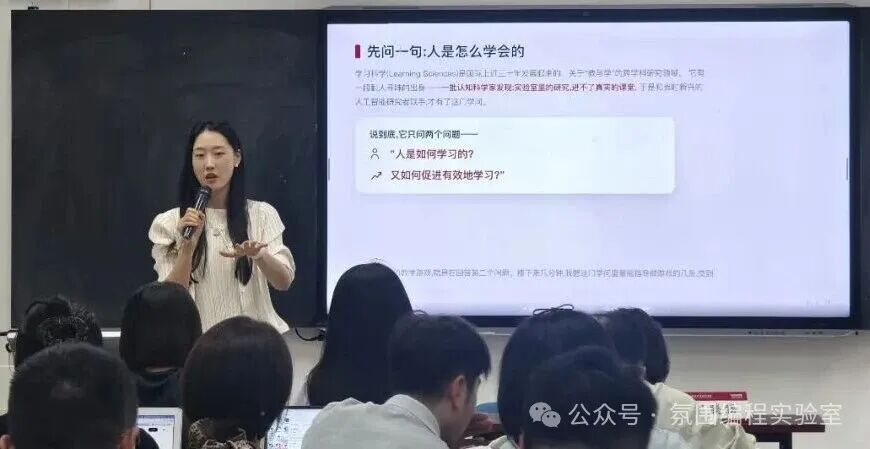

壹
它是什么
氛围编程 · Vibe Coding
用自然语言描述任务，与 AI 协作完成——不学语法，学协作。
任务驱动 · Work-driven
真实任务进课堂：教务表格、教学设计、汇报材料，就是练习题。
两者相加 · 本期研修班
37 位教育、科研、政务、企业学员——零基础，两天，四类成果。
从「用 AI 聊天」，到「用 AI 做事」。

活动回顾 · 研修班篇 · 二〇二六年九月
第2期 · 两天 · 37 位学员 · 四类成果
// 两天 · 一场思维跃迁 · 织入的都是学员原话
氛围编程 · Vibe Coding
用自然语言描述任务，与 AI 协作完成——不学语法，学协作。
任务驱动 · Work-driven
真实任务进课堂：教务表格、教学设计、汇报材料，就是练习题。
两者相加 · 本期研修班
37 位教育、科研、政务、企业学员——零基础，两天，四类成果。
研修班的每一段都围绕「当场做出来」设计。
例：教务表格 → 现场做成动态更新的框架
一 · 第一天上午 · 学方法

二 · 第一天下午 · 练数据
WorkBuddy 等工具完成数据清洗、分析与交互式图表——工作中的表格就是题面。

三 · 第二天 · 出成果
多智能体联合工作：文章下载、PPT 制作、公文写作、素材生产，汇总为一份数字化学习成果。

每位学员按自己的需求完成——不是统一作业，是各自的真实作品。
教学游戏 —— HTML 可运行
目标落位，学生愿意玩；四步协作法当场走通。
数据分析 —— 交互式可视化
一张表变成一张图；教务效率当场提高。
品牌海报 —— 可直接使用
自己的机构、自己的要素；现场生成现场迭代。
SKILL 工作流 —— 可复用
把做法写成规则；一次成功，反复调用。
「课程并非单纯理论讲解，实操占比很高，现场可以上手体验 AI 工具。」
—— 第2期学员
「对于 Prompt 有了新的理解，可以让 AI 思考解决方案，把大任务分割成小任务。」
—— 第2期学员
「即使不用写代码，也可以做出各种小程序。」
—— 第2期学员
不写代码，以自然语言协作；真正训练的是卡住之后怎么办。
不只学工具操作，还理解怎么在真实任务里学得更快更牢。
对话式工具、智能体工具、工程化 Coding Agent 依次上手。
课程专属智能体开放一个月，学习社群长期支持项目推进。